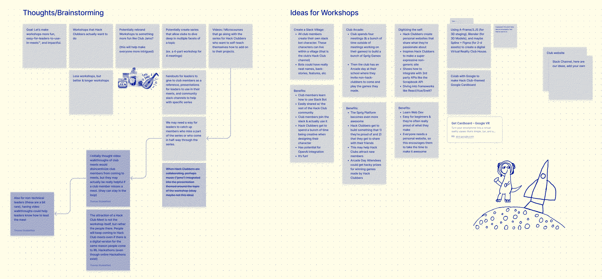
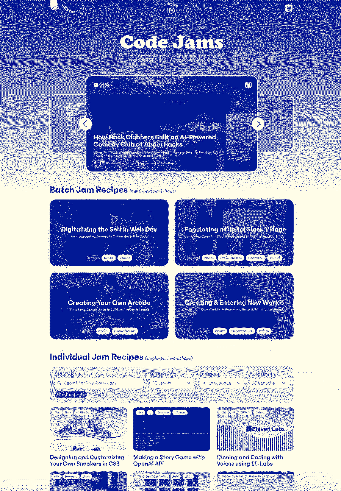

Journeys @
(2023-2024)
Home / Hack-Club-Jams-First-Big-Project
JAMS! I started with a question of: "How can we make workshops awesome?"

When I was in High School, I never used the workshops that Hack Club provided. I found it more work to go through each one and create slides around them than to just make my own.
I also think that making your own club meeting content makes you a better leader because you understand the content like the back of your hand & it is authentic to you & your club.
When I thought about what made great club meetings, the core thing for me was that it met the following conditions
- Every end project from the workshop was unique, leaving the attendee feeling ownership over what they made
- Workshops could be done solely in the browser (no need to download anything or to use a device other than a chromebook)
- Workshops needed to stem from some genunie curiosity or aspirational project that the creator wanted to make
My solution to this problem were "batch jams" where a Jam could have multiple parts where each part is done in a club meeting. There are some problems with this concept (like for example it is difficult to account for members that join/leave mid-way through the Club). Regardless of the issues with batches, I still wanted to provide them as an option for clubs.
I also thought the word "workshop" felt a bit corporate and that it seemed like a class where I wanted it to feel like a bunch of friends getting together making something fun: "jamming out a project" (this was the rationale behind calling it Hack Club Jams).

I started with the design (see above image) & then I made WebOS which was the first batch Jam! The concept behind the Jam was inspired a goal I had of making my own operating system when I was 7 or 8 years old and did not know how to code. I realized I could try making a web operating system in just pure vanilla javascript. I started breaking it down in my notebook as to how I would do this, I made a prototype, and then I turned it into slides (same process I did with my Hack Club).
I was working with Christina at the time and I was shocked when she was willing to give the project funds to host a bounty and pay Hack Clubbers to make content for the Jams site. This was the first time that a project I was working on had received funding.
I worked for weeks with every person participating in the bounty to help make their Jam fit that criteria that I mentioned (web compatible, hackable with different end results, and from a place of genuine curiosity). Mid-way through I remember looking through the Jams and Zach asking me what I thought of the content so far. I said: "honestly, right now it is really bad. I am going to figure out a way to turn this around. I am going to figure out a way to make them great."
Here I learned a lesson which is to always wait to pay a person doing a contract job until you are satisfied with the product that they promised to deliver. I worked with every person to help them frame their Jam as something that teenagers could fill a room with and something that they would enjoy leading a meeting about. Deciding to not give up but to rather take control of the situation and turn it around to make the content better was a key lesson for me and something I am proud of.
I think a lot of people at Hack Club (HQ & the community) question whether it was a good idea for us to break away from our workshops.hackclub.com site to make jams.hackclub.com. That's up to each individual to decide. I personally am for it.